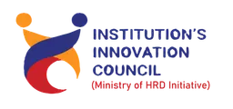

About Us
BITS TEXMin
Initiatives
Incubation
Team
Gallery
Join Us
Contact
About Us
BITS TEXMin
Initiatives
Incubation
Team
Gallery
Join Us
Contact

Institution's Innovation Council cum Entrepreneurship Cell, BIT Sindri
We empower students and startups to transform visionary ideas into impactful solutions
through mentorship, resources, and real world
opportunities, turning creativity into lasting change.
Welcome to the Institution's Innovation Council at BIT Sindri. We are dedicated to fostering innovation and entrepreneurship among students and faculty. Our mission is to create a vibrant ecosystem that nurtures creativity, collaboration, and the development of groundbreaking ideas. Join us in our journey to inspire and empower the next generation of innovators!
We are the official Entrepreneurship Cell of BIT Sindri, a council dedicated to nurturing innovation, creativity, and entrepreneurial mindset within the student community. Our council works to create an environment where ideas are explored, refined, and developed into meaningful solutions. Through startup-oriented initiatives, idea-development programs, innovation-based learning experiences, and a range of activities such as workshops, seminars, mentorship sessions, idea-pitching events, hackathons, and other experiential opportunities, we help students gain the exposure and practical understanding needed to navigate the startup ecosystem. We enable students to build the confidence and skills needed to navigate the startup ecosystem. We strive to inspire the next generation of founders, innovators, and leaders who can drive impactful change in technology, society, and industry.

Our vision is to build a dynamic entrepreneurial culture at BIT Sindri that sparks innovative thinking, strengthens entrepreneurial drive, and empowers students to build solutions that make a real difference. We aim to shape future founders and leaders who contribute meaningfully to technological advancement, industry growth, and societal progress.
Our mission is to cultivate a vibrant entrepreneurial ecosystem that encourages innovation, supports idea development, and empowers students to develop their ideas into real, innovative and impactful solutions. We aim to provide mentorship, resources, and experiential learning opportunities that help young innovators grow into confident and capable startup leaders.
Induction 2.0 is started you can resister from here Resister Now